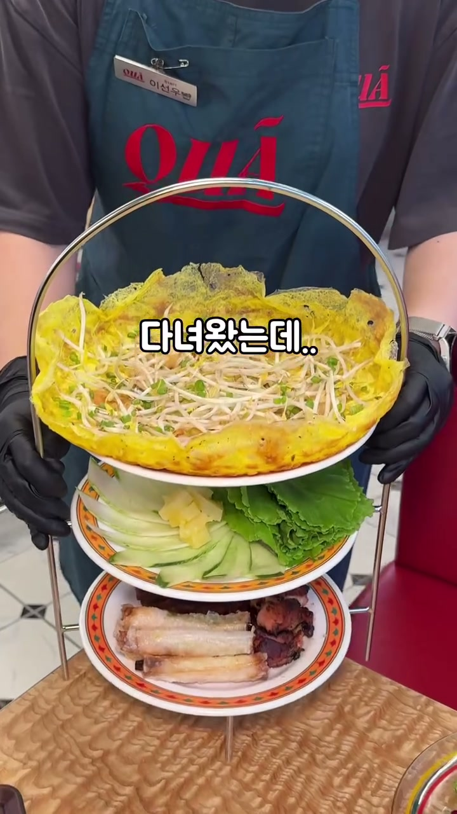
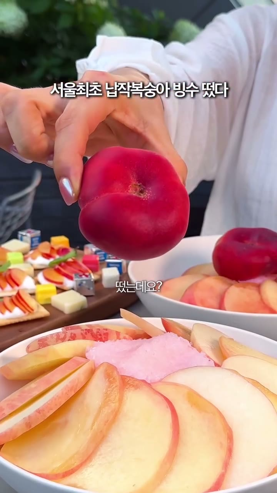
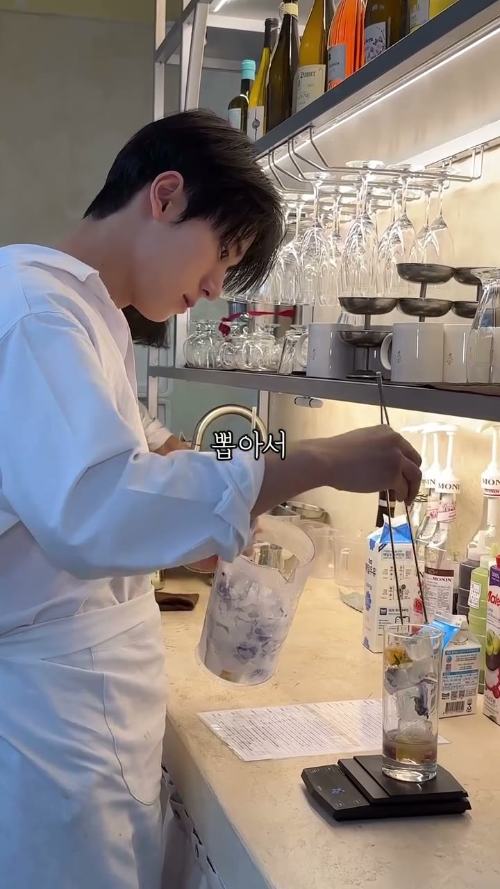
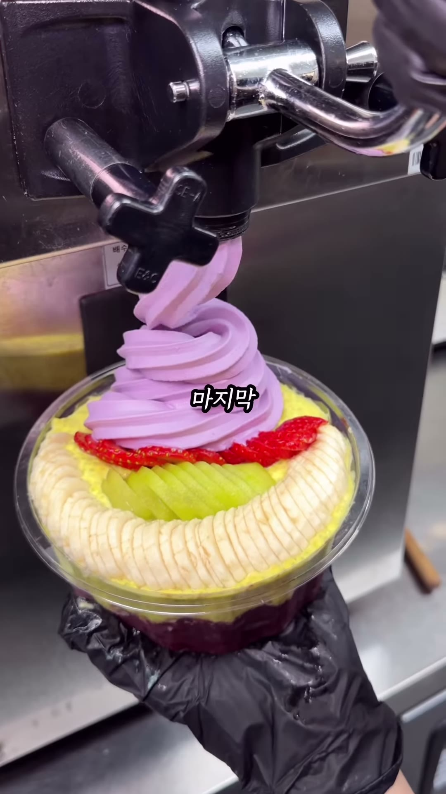
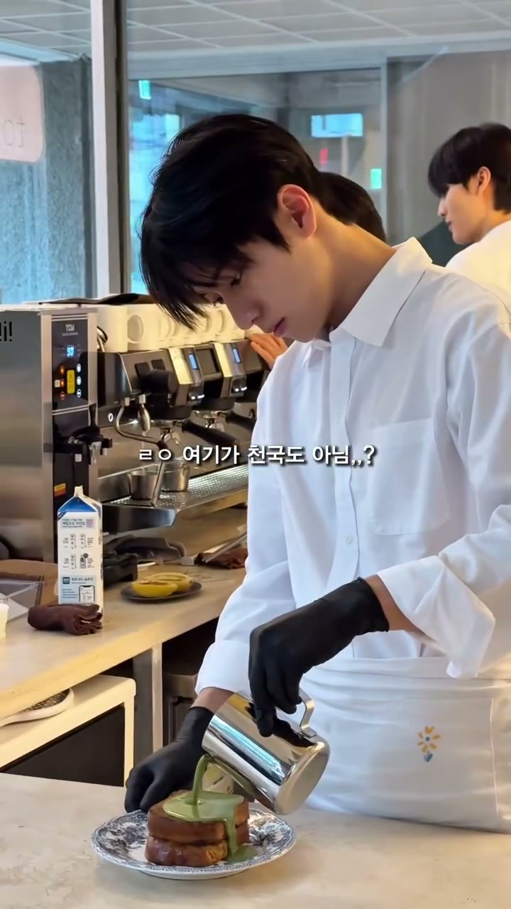
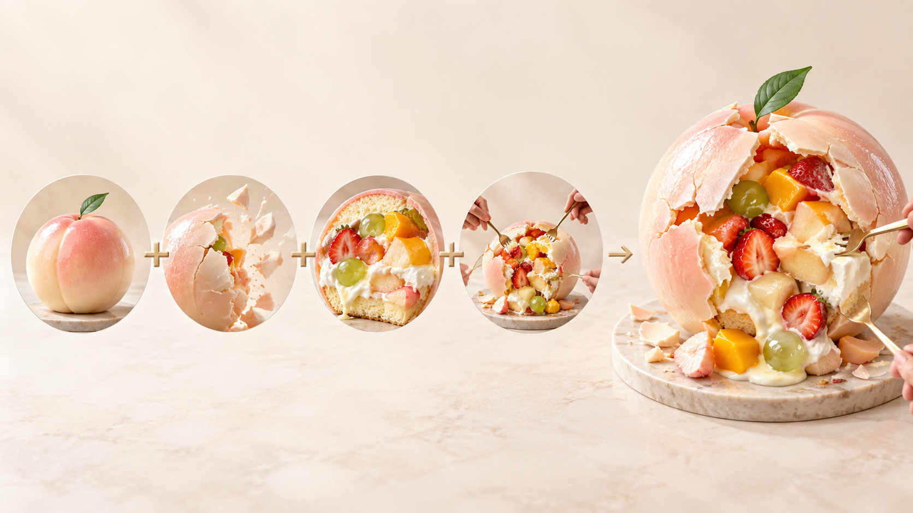

01 / SEOUL LINK · BAKERY PARTNERSHIP
기획을 매출로
연결하는 팀.
브랜드 기획 → 콘텐츠 기획 → 마케팅 → 운영. 서울링크의 실제 외식업 경험을 대왕 와그작 케이크에 연결합니다.
서울링크와 함께하는 이유 · 투자자용02 / 2026 CAMPAIGN RESPONSE
집행 게시물 338건.
확인된 콘텐츠 반응.
2026.01.01~09.15 확인된 집행 게시물 338건 · 수집 9/15, 뚜흐느솔 대표 2건 9/16 · 확인 지표 합산. 자연 확산 추산은 별도.
03 / CASE 01 · QUÁ / 꾸아
지하 18평에서
30개 이상 매장으로.
10억+ / 연매출
서울링크가 브랜드 개발 전반과 마케팅을 함께한 꾸아. 브랜드와 메뉴를 하나의 방문 경험으로 기획했습니다.
대표 영상 조회 3,722,926회 · 저장 25,262회
사업성과 대표 제공 · 과거 꾸아 국내 게시 사례는 2026년 집행 게시물 합계와 별도.
04 / CASE 02 · ROOF808 / 루프808
복숭아빙수 기획으로
일매출 100만원대 → 700~800만원대.
구도 · 복숭아빙수 메뉴 개발 · 마케팅
8/1~5 일평균 127만9,900원 → 8/6~31 일평균 438만9,694원
43일 일매출 원자료 8/1~9/12, 대관 포함 · 8/6 첫 광고 · 700~800만원대는 대표 제공 일매출 사례.
05 / CASE 03 · TOURNESOL / 뚜흐느솔
디저트와 인물.
한 장면의 이유.
두바이 프렌치토스트 메뉴 개발 + 잘생긴 남자 콘셉트 개발 + 마케팅.
2,338만 조회
국내 확인 게시물 15건 전체 합계
국내 확인 게시 15건 합계 · 대표 영상 2건 조회 21,984,532회 · 수집 9/15, 대표 2건 9/16 재확인.

06 / TOURNESOL · BUSINESS RESPONSE
콘셉트가 퍼지고,
매출이 달라졌습니다.
1,500만 원
→ 1.8억 원
월매출 12배 · 대표 제공
인물 콘셉트는 틱톡·인스타 확산 요소가 되었고, 해외 잡지에도 소개되었습니다.
매출·해외 잡지 소개 대표 제공 · 자연 확산 1억+ 조회는 대표 추산, 집행 게시물 합계와 별도.
07 / CASE 04 · WOODAEPO BLACK / 우대포블랙
메뉴 비주얼과 마케팅.
명동점 월매출의 흐름.
3월 4.05억 → 8월 9.01억 원. 4월부터 서울링크가 마케팅을 맡아 9월은 6개월째 운영 중입니다.
우대포블랙 명동점 월매출 2026.03~08 · 9월 미마감 제외.
08 / WOODAEPO BLACK · CONTENT ACROSS MARKETS
브랜드 전체 반응,
실제 국가별 영상.
우대포블랙 브랜드 전체 확인 게시 75건 합계 · 한국·중국 지점 미표기 · 대만·일본·홍콩·미국 명동점.
09 / CASE 05 · GREEKBERRY / 그릭베리
색·층·서빙이
메뉴를 설명합니다.
서울링크가 메뉴 비주얼 기획과 마케팅을 맡았습니다.
2,405,585 조회
그릭베리 브랜드 전체 확인 게시 30건 지표 합계 · 2026.09 수집.
10 / FOR THE WAGJAK CAKE
대왕 와그작 케이크에
가져올 실행.
시그니처 기획
찾아올 이유가 되는 콘셉트
촬영 구도
형태→소리→과일 단면
집행
제품이 확정된 뒤 고객에게 알리기
보며 운영
제철 변형과 후속 콘텐츠 기획
시그니처 경험은 고정하고, 제철 과일과 표현은 지금답게 바꿉니다.
와그작 케이크는 개발 전 콘셉트입니다. 위 역할은 서울링크의 실제 타 브랜드 경험을 바탕으로 제안하는 협업 범위입니다.

11 / BAKERY WITH SEOUL LINK
기획·확산·매출 경험을 가진 팀과
함께 만드는 베이커리.
와그작 케이크는 개발 전 콘셉트 · 기업가치 100억원·투자유치 10억원은 사업 목표.